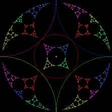

Purpose To generate fractals using circle inversions
Materials Circle Inversion Limit Set software
Background How circle inversions can generate fractals.
Exercises Here are some problems to investigate how the placement of the circles is related to the limit set.
Conclusion Circle inversions can generate fractals. The nonlinearity of inversion makes these shapes visually interesting. That inversion is a contraction only on the outside of the inverting circle can lead to some small changes in the cirlces yielding immense changes in the limit set.